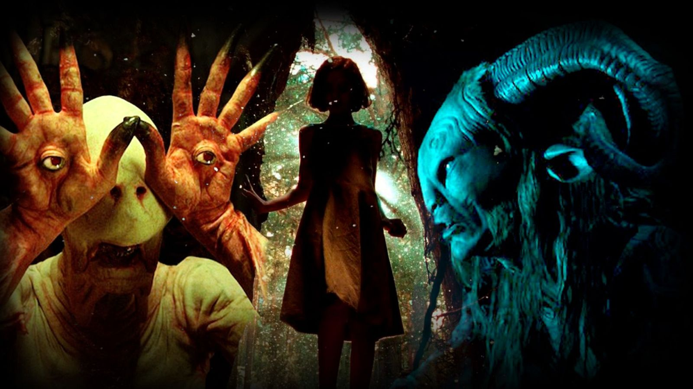
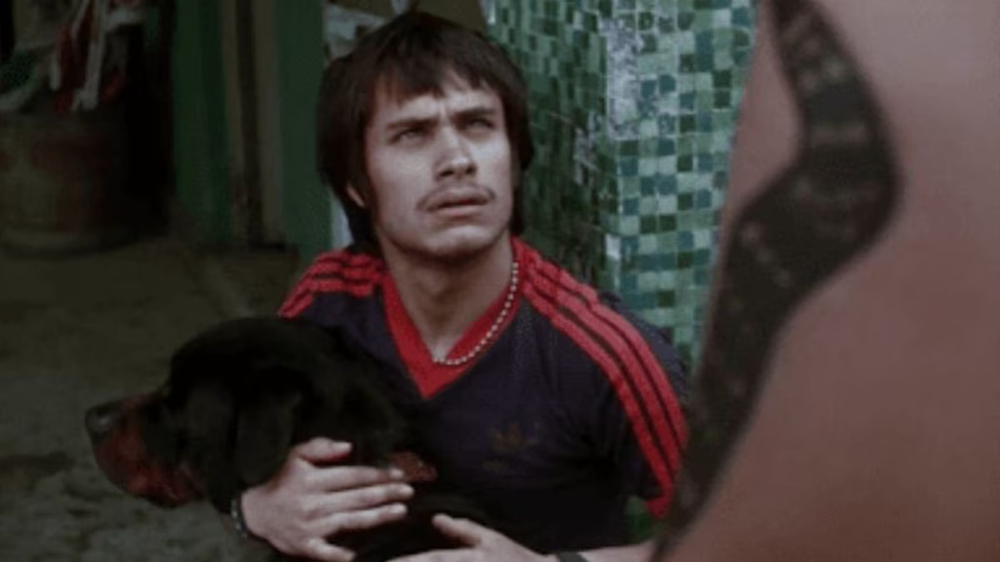
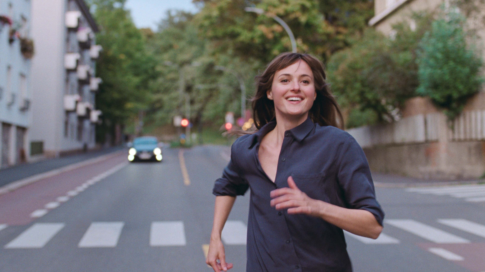

Accesibilidad desde el diseño
Está pensada para que cualquier persona pueda recorrerla desde su propia manera de percibir: sin barreras, con señalización clara y recursos que acompañan cada paso.
Universo sensorial
Te invita a entrar al mundo de una película antes de ver la pantalla. El sonido, el tacto, los objetos y el espacio te ayudan a prepararte: a imaginar, a ubicarte, a anticipar.
Es un recorrido presencial que convierte una película en estímulos concretos: sonidos, texturas, objetos y espacios que puedes sentir, orientarte en ellos y conectar con la obra antes de la proyección.
Está pensada para que cualquier persona pueda recorrerla desde su propia manera de percibir: sin barreras, con señalización clara y recursos que acompañan cada paso.
Te sitúa dentro de su mundo: escenas, sonidos, objetos y atmósferas que vuelven palpable la película antes de verla.
Te ayuda a orientarte y anticipar lo que viene, para que llegues a la sala con más claridad, más preguntas y menos incertidumbre.
Cada recorrido activa distintos sentidos para que la película llegue a ti desde varias direcciones: por el oído, las manos, el cuerpo, la vista y el olfato.
Voces, sonidos y paisajes auditivos que hacen presente el universo de la película: sus atmósferas, sus ambientes y sus momentos más reconocibles.
Materiales, relieves, objetos y texturas que convierten personajes, espacios y sensaciones en algo que puedes tocar y recorrer con las manos.
Apoyos gráficos, contrastes y elementos visuales que acompañan el trayecto y hacen más legible el espacio para todas las personas.
Te invita a desplazarte, orientarte y relacionarte con el montaje desde el cuerpo, haciendo del trayecto una parte activa del proceso.
Aromas que refuerzan atmósferas y despiertan memorias, ampliando la conexión emocional con el universo de la película.
Cada película del repositorio puede tener su propia exposición multisensorial.

Entra al universo de El laberinto del fauno a través de sus atmósferas sonoras, elementos táctiles y orientación espacial. Todo pensado para que llegues preparado a la proyección.
Disponible
Próximamente, este proyecto llevará la intensidad urbana, los espacios, los sonidos y las tensiones de Amores perros a una propuesta que podrás recorrer con todos los sentidos.
Próximamente
Próximamente, esta propuesta entrará al universo de La peor persona del mundo a través de emociones, ritmo, ciudad y memoria.
Próximamente